Tentang GamaRad S.O.S
Sistem Onboarding Siaga Radiologi - Aplikasi pembelajaran radiologi emergensi interaktif.

Visi & Misi
GamaRad S.O.S dikembangkan dengan visi untuk meningkatkan kualitas pembelajaran radiologi emergensi di Indonesia melalui platform digital yang interaktif dan mudah diakses.
Aplikasi ini bertujuan untuk menyediakan materi pembelajaran radiologi emergensi yang komprehensif, didukung oleh kasus-kasus klinis beserta pembahasan yang mendalam. Dengan pendekatan pembelajaran yang terstruktur berdasarkan regio anatomi, pengguna dapat mempelajari berbagai kondisi emergensi radiologi dengan lebih sistematis.
Fitur Utama
- Struktur pembelajaran berdasarkan regio anatomi
- Kasus-kasus klinis dengan gambar radiologi berkualitas tinggi
- Materi pembelajaran komprehensif: terminologi, presentasi klinis, diagnosis, dan manajemen
- Kuis interaktif untuk menguji pemahaman
- Desain responsif untuk akses di berbagai perangkat
Tim Pengembang

Dr. Nama Radiologis
Ketua Tim & Konten Radiologi

Dr. Nama Dokter
Konten Klinis & Emergensi

Nama Developer
Lead Developer

Nama Designer
UI/UX Designer
Institusi
GamaRad S.O.S dikembangkan oleh Fakultas Kedokteran, Kesehatan Masyarakat dan Keperawatan, Universitas Gadjah Mada.
 

Kontak
email@example.com
+62 xxx-xxxx-xxxx
Gedung Radiodiagnostik, FK-KMK UGM, Yogyakarta